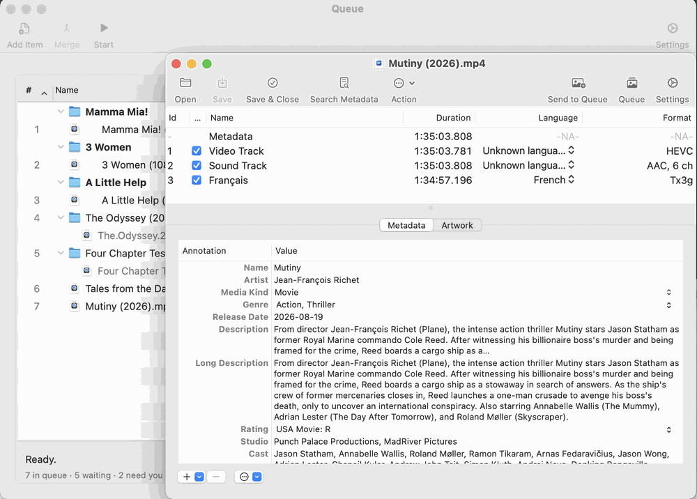

Opening a file with File → Open…, from the Welcome window, or by double-clicking a Queue row’s Edit button shows the editor. It lists the file’s tracks, its chapters and its tags, and lets you change any of them.

Toolbar. The default toolbar contains:
| Button | Action |
|---|---|
| Open | Open another file. |
| Save | Write your changes to the file. |
| Save & Close | Save and close the window in one step. |
| Search Metadata | Search the enabled providers and apply a result. |
| Send to Queue | Add the open document to the Queue instead of saving directly. |
| Queue | Show the Queue window. |
| Import / Delete / Action | Add a track from another file, remove the selected track, and a menu of track tasks (insert chapters at a fixed interval, organize alternate groups, clear or prettify track names, fix audio fallbacks, offset). |
| Settings | Open Preferences. |
You can change which buttons are shown, and whether they show icons, text or both, with View → Customize Toolbar… or by right-clicking the toolbar. Tip: if you customized the toolbar before an update, new buttons such as Save & Close appear in the Customize Toolbar sheet and can be dragged in.
Undo and redo. Every edit — tags, artwork, tracks, chapters — can be undone and redone with Edit → Undo / Redo. The window’s edited dot clears when you undo everything or save.
Important. If you save a movie that has no title tagged, M3 leaves its file name and folder alone. Run a metadata search first if you want the file renamed from its tags.